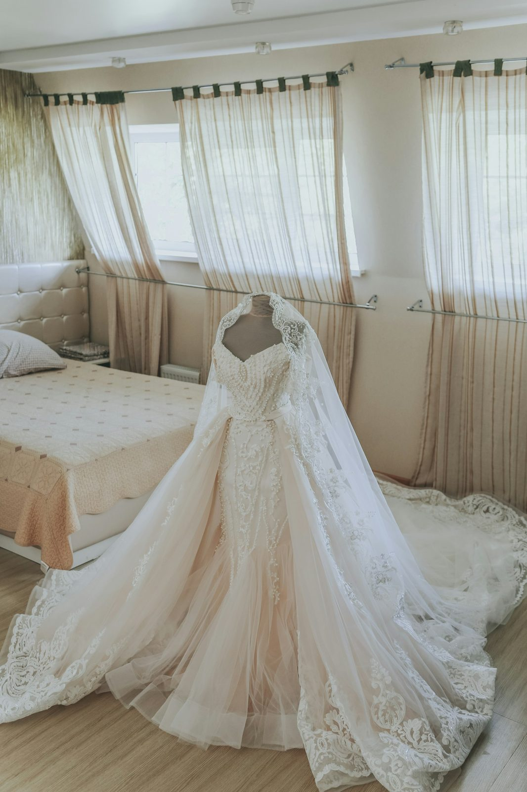
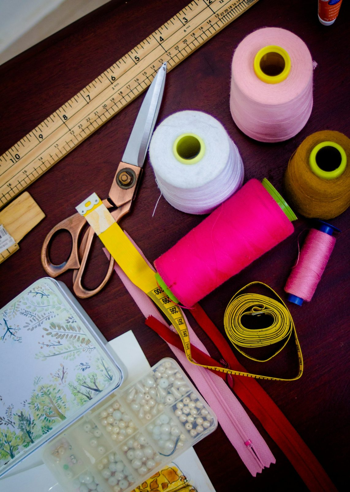

When damage strikes your belongings, let your trusted local cleaners bring them back. For over a decade, we’ve specialized in removing smoke, mildew, and water damage from clothing and household items.
A decade of restoration expertise
After a fire, a flood, or long storage, most cleaners simply won’t take the job. For more than ten years, Manor has specialized in exactly this work — the quiet, careful restoration your trusted local cleaner has done for Fallbrook, year after year.
Talk to us about your itemsSpecial practices and specific cleaning solutions — the kind most cleaners simply don’t do — bring your garments back from what looked like a total loss.
A piece brought back
A gown pulled from long storage, a jacket touched by smoke, linens caught in a flood — with the right process, the piece you were ready to give up on comes back clean, fresh, and yours again.
Ask what can be saved

Ten years of second chances
The work most cleaners turn away is exactly what Fallbrook has trusted Manor with for over a decade — garments and household goods that looked like a total loss, returned like new.
What we restore
From the closet to the linen chest, we bring garments and household items back to life — gently, thoroughly, and with solutions matched to the damage.
Suits, dresses, silks, and everyday garments — carefully treated to lift smoke, mildew, and staining without harming the fabric.
Comforters, blankets, and bedding refreshed and restored — even the pieces with sentimental value you can’t replace.
Draperies and small area rugs cleaned of smoke, mildew, and water damage — brought back to the look you remember.
Special practices, specific solutions
We have special practices along with specific cleaning solutions to bring your garments back to life — matched to smoke, to mildew, or to water. Insurance claims and irreplaceable keepsakes are both welcome; bring us the pieces that matter most, and we’ll tell you honestly what can be saved.
When damage strikes
Bring us the garments and household items you thought were lost — or call and we’ll tell you what we can do.